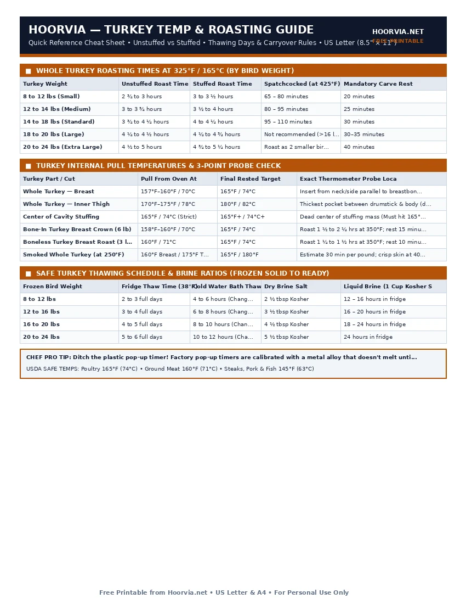

Turkey Temperature & Roasting Time Chart (By Weight)
Roasting a whole turkey is high-stakes cooking: a 16-pound bird carries massive thermal momentum, meaning its internal temperature continues climbing by 8°F to 12°F during a 30-minute rest. If you wait until the breast reads 165°F in the oven, it will hit 176°F on the carving board and turn dry. Pull your turkey when the deepest part of the breast reaches 157°F–160°F and the thigh hits 175°F.
| Turkey Weight | Unstuffed Roast Time | Stuffed Roast Time | Spatchcocked (at 425°F) | Mandatory Carve Rest |
|---|---|---|---|---|
| 8 to 12 lbs (Small) | 2 ¾ to 3 hours | 3 to 3 ½ hours | 65 – 80 minutes | 20 minutes |
| 12 to 14 lbs (Medium) | 3 to 3 ¾ hours | 3 ½ to 4 hours | 80 – 95 minutes | 25 minutes |
| 14 to 18 lbs (Standard) | 3 ¾ to 4 ¼ hours | 4 to 4 ¼ hours | 95 – 110 minutes | 30 minutes |
| 18 to 20 lbs (Large) | 4 ¼ to 4 ½ hours | 4 ¼ to 4 ¾ hours | Not recommended (>16 lb) | 30–35 minutes |
| 20 to 24 lbs (Extra Large) | 4 ½ to 5 hours | 4 ¾ to 5 ¼ hours | Roast as 2 smaller birds | 40 minutes |
| Turkey Part / Cut | Pull From Oven At | Final Rested Target | Exact Thermometer Probe Location |
|---|---|---|---|
| Whole Turkey — Breast | 157°F–160°F / 70°C | 165°F / 74°C | Insert from neck/side parallel to breastbone into deepest lobe |
| Whole Turkey — Inner Thigh | 170°F–175°F / 78°C | 180°F / 82°C | Thickest pocket between drumstick & body (do not touch bone!) |
| Center of Cavity Stuffing | 165°F / 74°C (Strict) | 165°F+ / 74°C+ | Dead center of stuffing mass (Must hit 165°F before pulling) |
| Bone-In Turkey Breast Crown (6 lb) | 158°F–160°F / 70°C | 165°F / 74°C | Roast 1 ½ to 2 ¼ hrs at 350°F; rest 15 minutes |
| Boneless Turkey Breast Roast (3 lb) | 160°F / 71°C | 165°F / 74°C | Roast 1 ¼ to 1 ½ hrs at 350°F; rest 10 minutes |
| Smoked Whole Turkey (at 250°F) | 160°F Breast / 175°F Thigh | 165°F / 180°F | Estimate 30 min per pound; crisp skin at 400°F last 15 min |
| Frozen Bird Weight | Fridge Thaw Time (38°F) | Cold Water Bath Thaw | Dry Brine Salt | Liquid Brine (1 Cup Kosher Salt / Gal) |
|---|---|---|---|---|
| 8 to 12 lbs | 2 to 3 full days | 4 to 6 hours (Change water / 30m) | 2 ½ tbsp Kosher | 12 – 16 hours in fridge |
| 12 to 16 lbs | 3 to 4 full days | 6 to 8 hours (Change water / 30m) | 3 ½ tbsp Kosher | 16 – 20 hours in fridge |
| 16 to 20 lbs | 4 to 5 full days | 8 to 10 hours (Change water / 30m) | 4 ½ tbsp Kosher | 18 – 24 hours in fridge |
| 20 to 24 lbs | 5 to 6 full days | 10 to 12 hours (Change water / 30m) | 5 ½ tbsp Kosher | 24 hours in fridge |
Printable Cheat Sheet Preview (US Letter & A4)
High-contrast, ink-saving layout designed for kitchen binders, grill stations, and refrigerator doors. No sign-up required.

Why Professional Chefs Never Stuff the Cavity & Pull at 158°F
Cooking a whole turkey presents a classic thermodynamic problem: the lean, exposed breast sits at the top of the oven where heat is highest, while the dense thighs and cavity sit low inside the roasting pan. If you pack the center cavity with cold bread stuffing, the stuffing acts like a giant ice pack. By the time the center of the stuffing finally reaches the mandatory 165°F food-safety mark (to kill any bacteria from raw turkey juices that soaked into the bread), the breast meat has been sitting at 180°F+ for 45 minutes.
3 Steps to the Juiciest Holiday Turkey
- Bake Dressing in a Separate Casserole Dish: Leaving the turkey cavity open (with just halved aromatics like onion, lemon, and sage) allows hot air to cook the bird from both inside and outside, cutting roasting time by 30–45 minutes.
- Dry-Brine Uncovered for 24–48 Hours: Rub Diamond Crystal kosher salt (1 teaspoon per pound of meat) plus a pinch of baking powder under and over the skin, then set the turkey uncovered on a rimmed sheet pan in the fridge for 24 hours. The salt seasons deep into the breast while the dry refrigerator air desiccates the skin so it blisters like glass.
- Rest 30 to 40 Full Minutes Uncovered: Tenting a resting turkey tightly in foil traps steam and turns crispy skin soggy. Because a 15-pound turkey retains heat for over an hour, rest it uncovered on a warm carving board for 30 minutes before slicing.
Frequently Asked Questions
What if my turkey is still partially icy inside on Thanksgiving morning?
Never put a half-frozen turkey in the oven—it will take 50% longer and cook unevenly. Submerge the wrapped bird breast-side down in a sink or cooler of cold tap water for 2–3 hours, changing the water every 30 minutes, or run cool water through the open cavity once unwrapped.
Should I baste my turkey every 30 minutes with pan drippings?
No! Every time you open the oven door to baste, oven temperature drops by 35°F–50°F, adding 10 minutes to the cook time, and pouring liquid over the skin softens the crust. Brush with melted butter or oil before roasting and keep the door closed.
How much whole turkey do I need to buy per person?
Plan on 1.25 pounds of whole bone-in turkey per guest if you want standard servings, or 1.5 pounds per guest if you want generous Thanksgiving leftovers for sandwiches.